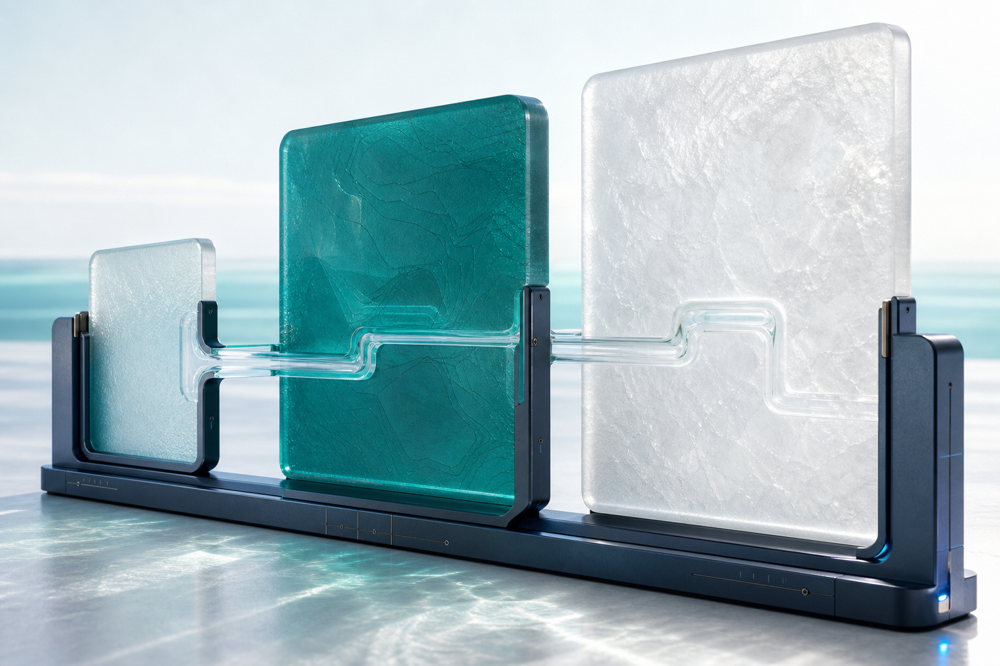

Trusted entry
Material study02
Your workspace, made tangible.
One trusted account aligns with the workspace you belong to and the Swooshz applications approved for it.

01 / 03
One continuous route.
Three distinct responsibilities.
Account
Workspace
Approved application
How access takes shape
Context aligns before the product opens.
Team context
Your workspace sets the view.
Membership and role context determine the workspace administration and approved applications available to you.Focused product
Swooshz Quote Auto Generator opens separately.
Platform launches the approved application. Its quote workflow and runtime product data stay inside Swooshz Quote Auto Generator.SEO / GEO / Seozilla remains vendor-pending and planning-only.